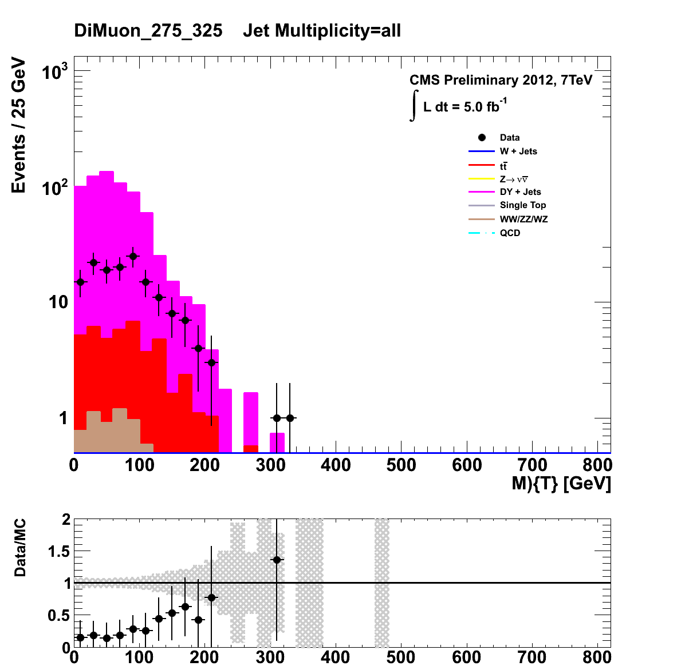
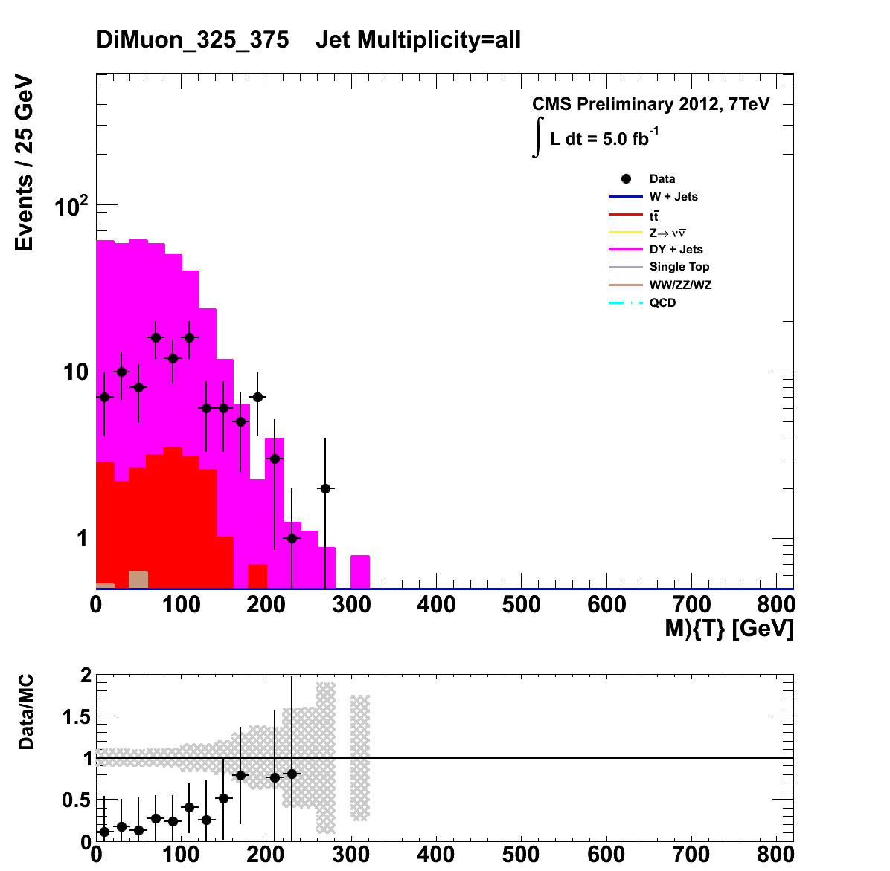
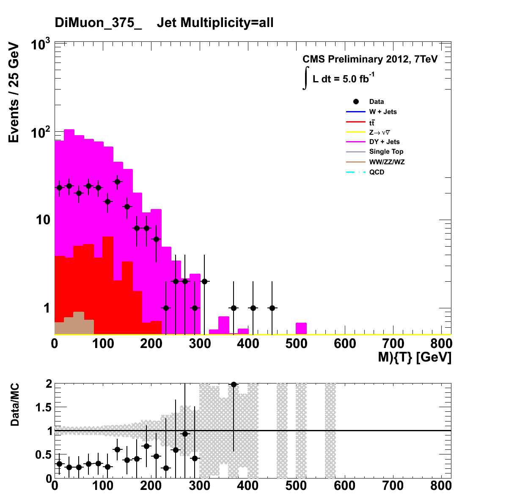

Author: Darren Burton <br> 
<script language="Javascript"> 
 document.write("Last Modified: " + document.lastModified + ""); 
 </script> <br> 
 <center>
 <p> 
 <font size="5"> DiMuon Plots </font>
 </p>
<font size="3">Results for MT__all_Inclusive </font><br> 
Hist Name: <a href="Stacked_MT__all_Inclusive.html">MT__all</a>       |     <a href="Stacked_EffectiveMass_after_alphaT_55_all_Inclusive.html">EffectiveMass_after_alphaT_55_all</a>       |     <a href="Stacked_EffectiveMass_all_Inclusive.html">EffectiveMass_all</a>       |     <a href="Stacked_MHT_all_Inclusive.html">MHT_all</a>       |     <br> 
<a href="Stacked_AlphaT_all_Inclusive.html">AlphaT_all</a>       |     <a href="Stacked_AlphaT_Zoomed_all_Inclusive.html">AlphaT_Zoomed_all</a>       |     <a href="Stacked_HT_all_Inclusive.html">HT_all</a>       |     <a href="Stacked_HT_after_alphaT_55_all_Inclusive.html">HT_after_alphaT_55_all</a>       |     <br> 
<a href="Stacked_JetMultiplicity_all_Inclusive.html">JetMultiplicity_all</a>       |     <a href="Stacked_JetMultiplicityAfterAlphaT_55_all_Inclusive.html">JetMultiplicityAfterAlphaT_55_all</a>       |     <a href="Stacked_Btag_Pre_AlphaT_5__all_Inclusive.html">Btag_Pre_AlphaT_5__all</a>       |     <a href="Stacked_Btag_Post_AlphaT_5_55_all_Inclusive.html">Btag_Post_AlphaT_5_55_all</a>       |     <br> 
<br> 
<br> 
Btag Multiplicities:  <a href="Stacked_MT__all_Inclusive.html">Inclusive</a>     /    <a href="Stacked_MT__all_Two.html">2-btag</a>     /    <a href="Stacked_MT__all_One.html">1-btag</a>     /    <a href="Stacked_MT__all_Zero.html">0-btag</a>     /    <a href="Stacked_MT__all_More_Than_Two.html">More Than Two</a>     /    <a href="Stacked_MT__all_More_Than_Zero.html">A btag</a>     /    <br> 
<br> 
Change Evolution Type: <a href="Stacked_MT__all_275_325.html">HT Evolution</a><br> 
<br> 
 Toggle Full/Basic/Stacked Plots:<a href="MT__all_Inclusive.html">   Full </a>     |     <a href="Simplified_MT__all_Inclusive.html">   Simplified </a><br> 
<br> 
 Return to Home Page:<a href="../RA1_Website_Plots.html"> Go </a><br><br><a href=Stacked_MT__all_DiMuon_275_325.png></a> 
<a href=Stacked_MT__all_DiMuon_325_375.png></a> 
<a href=Stacked_MT__all_DiMuon_375_upwards.png></a> 
